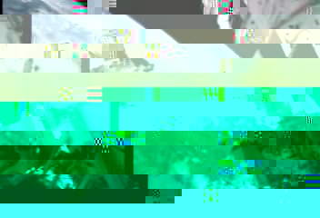
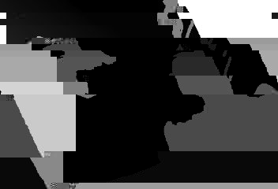
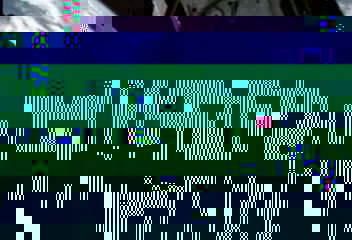
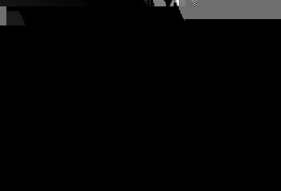

This manual was last updated January 18, 2006 for version 0.0.1 of cvtool.
Copyright © 2005, 2006 Martin Lambers
This program, including this manual, is free software; you can redistribute it and/or modify it under the terms of the GNU General Public License as published by the Free Software Foundation; either version 2 of the License, or (at your option) any later version.This program, including this manual, is distributed in the hope that it will be useful, but WITHOUT ANY WARRANTY; without even the implied warranty of MERCHANTABILITY or FITNESS FOR A PARTICULAR PURPOSE. See the GNU General Public License for more details.
You should have received a copy of the GNU General Public License along with this program and manual; if not, write to the Free Software Foundation, Inc., 51 Franklin Street, Fifth Floor, Boston, MA 02110-1301, USA.
Cvtool is a filter that manipulates one or more images: it reads images from standard input and writes the manipulated images to standard output. It can read and write streams of NetPBM images (ppm, pgm, pbm) and video streams in the YUV4MPEG2 format used by the MJPEG Tools.
Cvtool integrates all its functionality into a single binary, and makes
it available through commands such as rotate, smooth, and
others.
The following command scales a NetPBM image by a factor of 3:
$ cvtool scale --factor 3.0 < input.ppm > output.ppm
This is how one would select a rectangle from a YUV4MPEG2 video stream:
$ cvtool cut --left 10 --top 10 --width 100 --height 100 \
< input.y4m > output.y4m
cvtool help prints a list of available commands, and
cvtool help cmd prints help for the command cmd.
All NetPBM image formats (pbm, pgm, ppm, pam) are supported, except for their old "plain" variants. Multiple images in one file are supported. They may differ in size and type.
Cvtool always uses 256 values per color channel. If the input uses a different number, it will be converted, and a warning will be issued.
Cvtool supports a subset of the YUV4MPEG2 format as used by MJPEG Tools.
The following features are not yet supported:
Internally, cvtool works with chroma information for each pixel. This corresponds to the 444 chroma subsampling type of the YUV4MPEG2 format. The 420jpeg subsampling type stores chroma information only for groups of 4 pixels, which may mean a loss of information.
Cvtool will keep the chroma type of the input files, which is 420jpeg in most cases, and it will use the 420jpeg type by default when creating new `y4m' streams. This is because many tools, including mpeg2enc and MPlayer, only accept 420jpeg subsampling.
To preserve the full chroma information across several stream manipulation steps, the 444 subsampling must be requested explicitly, for example with the convert command:
$ cvtool convert --chroma 444 < input.y4m \
| ... manipulate frames ... \
| cvtool convert --chroma 420jpeg \
| mpeg2enc -f4 -o video.mpg
Cvtool normally prints messages to stderr. It prepends messages with its
name, the level of information, and the name of the command.
The level of information is DBG for debugging messages, INF for
informational messages, WRN for warnings, ERR for error
messages, and REQ for requested information. Normally, cvtool prints only
messages of level INF or higher, but this can be changed with
--quiet and --verbose; see below.
Some commands, for example info, print special information messages
that the user explicitly requests. Such special messages have the level
REQ, and can usually be redirected using the --output option.
In this case, no additional information will be prepended to the messages.
The special filename - means standard output (stdout).
Redirecting messages to stdout is only allowed when no images are
written to stdout.
-q|--quietWRN
and higher will be printed.
-v|--verboseDBG. This will include progress information in many
cases, but much of the output is really only useful for debugging purposes.
Some commands need arrays of integer or floating point values as parameters. Matrices are treated as two-dimensional arrays. Higher dimensions are also possible.
All of these array types are treated the same: the first part of the argument determines the number of dimensions of the array and its size in each dimension. The second part lists all values, separated by commas.
If the command requests an array or matrix of fixed dimension and size (or of dimension 1 and arbitrary size), then the first part can be omitted: only the value list is necessary in this case.
Examples:
3:1,1,1
5:1.2,1.3,0.7,0.5,0.0
1.2,1.3,0.7,0.5,0.0
3x3:1,2,3,4,5,6,7,8,9
2x2x2:1.11,1.12,1.21,1.22,2.11,2.12,2.21,2.22
Colors can be given in one of three forms:
Cvtool returns 0 on success and 1 on error.
help [command]
Print general or command specific help.
version
Print version information.
info [-o|--output=file]
Print information about the first frame in a stream to stderr or to the given
file ('-' means stdout).
The following information will be printed: STREAMTYPE (`y4m' or `pnm'),
PIXELTYPE (`yuv' for `y4m' streams, `rgb' or `gray' for `pnm' streams),
WIDTH, HEIGHT, and, if STREAMTYPE is `y4m', CHROMA,
INTERLACING, FRAMERATE, ASPECTRATIO.
In a `y4m' stream, all frames are of the same type, and the information thus applies to
the whole stream. This is not true for `pnm' streams!
$ cvtool info < file.pnm
cvtool: [INF] info: STREAMTYPE=pnm PIXELTYPE=rgb WIDTH=352 HEIGHT=240
$ eval `cvtool info -o - < file.pnm`
$ echo $WIDTH
352
combine [-m|--method=(lr|leftright)|(tb|topbottom)]
[-j|--justify=(left|top)|center|(right|bottom)] [-c|--color=color]
file...
Combine the given files by placing the frames side by side (`leftright') or one below the other (`topbottom'). The default is `leftright'. If the frames have different sizes, then the smaller ones have to be aligned with the biggest one. The default is to center them. The remaining space will be filled with the given color; the default is black.
$ cvtool combine left.pnm right.pnm > lr.pnm
$ cvtool combine -m tb \
<(cvtool combine a.pnm b.pnm) \
<(cvtool combine c.pnm d.pnm) \
> 2x2.pnm
convert [-o|--output-type=pnm|y4m] [-g|--gray] [-C|--chroma=420jpeg|444]
[-F|--framerate=f1:f2] [-A|--aspect-ratio=a1:a2]
Convert input to `pnm' or `y4m' format. The default is to keep the input
format.
The --gray option converts each frame to graylevels. For the `pnm'
output type, this is the only option that has any effect; the others are
silently ignored.
For `y4m', the chroma subsampling, frame rate, and aspect ratio can be
given. The default is to incur them from the input stream. If the input
stream is not a `y4m' stream, the defaults are `0:0' ("unknown")
for frame rate and aspect ratio, and `420jpeg' for chroma subsampling.
$ cvtool convert -C 444 < in.y4m > out.y4m
$ cvtool convert -o pnm < video.y4m > video.pnm
create [-t|--type=gray|rgb|yuv] [-n|--n=n] -w|--width=w
-h|--height=h [-c|--color=color] [-C|--chroma=420jpeg|444]
[-F|--framerate=f1:f2] [-A|--aspect-ratio=a1:a2]
Create n (default 1) frames of pixel type `gray', `rgb' or `yuv' (default `rgb'), with the given width and height, filled with the given color (default black). The resulting stream type will be `pnm' for `gray' and `rgb' frames, and `y4m' for `yuv' frames. The chroma subsampling, frame rate, and aspect ratio information is only relevant for the `yuv' type; it will be silently ignored for the other types.
$ cvtool create -t yuv -F 25:1 -w 720 -h 576 -n 250 > 10-seconds-PAL.y4m
$ cvtool create -t rgb -w 720 -h 576 -c green > green.pgm
foreach [-s|--shell=shell] [-n|--n=n] cmd
Execute the given command for every frame. The command is
expected to read n frames from standard input (default is n=1),
and write an arbitrary number (including zero) of
frames to standard output. The original frame(s) that were
given to the command are replaced by the output of the
command. The frames that the command produces are converted
to the format of the original frames. The foreach command
replaces the following special strings in the command cmd
before executing the command: %N (replaced with frame
number), %W (replaced with frame width), and %H (replaced
with frame height). If n is greater than 1, these values
refer to the first frame that is piped to the command.
The command cmd is executed by passing it to the system shell.
The default is `/bin/sh -c' on most systems. This can be
overridden with the --shell option. It
expects a string with zero or one spaces: The first part of
the string is the shell, the second part (if any) is the
first option to the shell. The next option will then be the
command to execute.
$ cvtool foreach 'cvtool info' < many-images.pnm
# Rotate a video. Use chroma 444 to allow odd width/height. Resize after
# rotation to keep the original dimensions.
$ cvtool convert -C 444 < video.y4m \
| cvtool foreach 'cvtool rotate -a %N | cvtool resize -w 352 -h 240' \
| cvtool convert -C 420jpeg \
> rotating-video.y4m
merge [-s|--shuffle] [-o|--output=file] file...
Merges files into one stream, in the given order. If
--shuffle is used, the order will be randomized. The file
names will be printed to stderr in the order they are
merged. If --output is used, the file names will be written
to the given file instead.
$ ls
frame000.pnm frame001.pnm frame002.pnm
$ cvtool merge * | cvtool convert -o y4m > video.y4m
reverse
Reverses the order of the frames in the stream. This requires a temporary file that is big enough to hold the complete input stream.
$ cvtool reverse < video.y4m > oediv.y4m
select [-d|--drop] range...
Selects frames from a stream. By default, frames in the given ranges are kept and all others
dropped. With --drop, frames in the given ranges are dropped and all others kept.
A range must be of the following form: l-h (from l to
h), -h (from beginning to h), l- (from l to end),
l (only l), or - (everything). Each start and end point can be a
frame number (counting from 0) or a time in the format
[hours:]minutes:seconds[.fraction]. In short: if it contains a colon, it's a
time. Time ranges can only be used for YUV4MPEG2 streams with known frame rate.
IMPORTANT: If you use frame number ranges, the high frame number is inclusive:
the frame with this number will be dropped/kept. If you use time ranges, the
high time is exclusive and marks the first frame that will not be dropped/kept.
# Drop the frames 0 to 124 from the stream (with a framerate of 25 fps,
# these are the first five seconds).
$ cvtool select --drop 0-124 < in.y4m > out.y4m
# Drop the first 5 seconds of the stream (with a framerate of 25 fps,
# these are the frames 0 to 124. The frame at 0:05, with the frame
# number 125, will be the first that is kept!)
$ cvtool select --drop 0:00-0:05 < in.y4m > out.y4m
# Keep the second 5-minutes-block and drop all the rest. Both
# commands are equivalent.
$ cvtool select 5:00-10:00 < in.y4m > out.y4m
$ cvtool select --drop -5:00 10:00- < in.y4m > out.y4m
split [-n|--n=n] [-t|--template=template] [-b|--backwards]
[-s|--start=i]
Split the input stream into multiple files, each containing
n frames (default is n=1). The filename will be generated
from the template: the template must contain exactly one
appearance of the character %. This character must be
followed by one of the digits 1 through 9. The digit must be
followed by the uppercase character N. This special string
%xN will be replaced by the number of the first frame of the
stream contained in this file. The number will be
left-padded with zeros until its width is at least x
characters. The default template is `frame-%6N'.
A start number i for the first frame can be given, and the
frames can be counted backwards. If the frames are counted
backwards, a start number is required, because negative
frame numbers are not accepted.
$ cvtool split -t frame%3N.pnm < ../video.y4m
$ ls
frame000.pnm frame001.pnm frame002.pnm
$ cvtool split -s 99 -b -t img%2N.pnm < ../video.y4m
$ ls
img99.pnm img98.pnm img97.pnm
resize -w|--width=w -h|--height=h [-x|--x-offset=x]
[-y|--y-offset=y] [-c|--color=color]
Resize the frames to the given new width and height. Place the original frame contents at the position (x,y) relative to the new frame (these offsets may be negative). If no or an incomplete position is given, compute the missing part(s) so that the old contents are centered on the new frame. Fill holes that might result with the given color (default is black).
$ cvtool info < img.pnm
cvtool: [INF] info: STREAMTYPE=pnm PIXELTYPE=rgb WIDTH=352 HEIGHT=240
# Add a green border of 10 pixels
$ cvtool resize -w 372 -h 260 -c green < img.pnm > img2.pnm
cut -l|--left=l -t|--top=t -w|--width=w
-h|--height=h
Only let the given rectangle through; cut the rest of each frame.
$ cvtool cut -l 0 -t 0 -w 10 -h 10 < in.pnm > out.pnm
affine -m|--matrix=2x2-matrix [-c|--color=color]
[-i|--interpolation=none|bilinear]
Apply the affine tranformation defined by the given matrix (4 floating point values separated by commas) to the frames. The frame dimensions will be adapted so that the resulting image will fit. Possible holes will be filled with the given color; the default is black. The default interpolation type is bilinear.
$ cvtool affine -m 2.0,0.1,0.75,1.0 < in.pnm > out.pnm
flip
Flip frames (left/right).
$ cvtool flip < in.pnm > out.pnm
flop
Flop frames (top/bottom).
$ cvtool flop < in.pnm > out.pnm
rotate -a|--angle=angle [-c|--color=color]
[-i|--interpolation=none|bilinear]
Rotate frames with the given angle (in degrees), counterclockwise. The dimensions of the rotated frame will be big enough to hold all informations from the source. "Holes" will be filled with the given color; the default is black. The default interpolation type is bilinear (simple rotations (90, 180, or 270) do not need interpolation).
$ cvtool rotate -a -45 < in.pnm > out.pnm
scale [-w|--width=w] [-h|--height=h]
[-i|--interpolation=none|bilinear]
scale -x|--factor-x=factor-x -y|--factor-y=factor-y
[-i|--interpolation=none|bilinear]
scale -f|--factor=factor [-i|--interpolation=none|bilinear]
Scale frames to new size. The default interpolation type is bilinear.
First form: Give new width and/or height. If one value is missing, it is
computed from the other so that the aspect ratio remains the same.
Second form: Give scale factors for width and height.
Third form: Give one scale factor for both width and height.
$ cvtool info < in.pnm
cvtool: [INF] info: STREAMTYPE=pnm PIXELTYPE=rgb WIDTH=400 HEIGHT=200
# The following three commands do the same:
$ cvtool scale -w 100 -h 50 < in.pnm > out.pnm
$ cvtool scale -x 0.25 -y 0.25 < in.pnm > out.pnm
$ cvtool scale -f 0.25 < in.pnm > out.pnm
shear [-x|--shear-x=angle-x] [-y|--shear-y=angle-y] [-c|--color=color]
[-i|--interpolation=none|bilinear]
Shear frames in horizontal and/or vertical direction, with the given angle(s) from (-90,90). Negative angles shear clockwise. "Holes" will be filled with the given color; the default is black. The default interpolation type is bilinear.
$ cvtool shear -x 20 -y 10 < in.pnm > out.pnm
smooth average [-3|--3d] -k|--k=k
smooth average [-3|--3d] -x|--k-x=kx -y|--k-y=ky [-t|--k-t=kt]
smooth median [-3|--3d] -k|--k=k
smooth median [-3|--3d] -x|--k-x=kx -y|--k-y=ky [-t|--k-t=kt]
smooth gauss [-3|--3d] -k|--k=k
smooth gauss [-3|--3d] -x|--k-x=kx -y|--k-y=ky [-t|--k-t=kt]
smooth gauss [-3|--3d] [-k|--k=k] [-x|--k-x=kx]
[-y|--k-y=ky] [-t|--k-t=kt] [-s|--sigma=s]
[--sigma-x=sx] [--sigma-y=sy] [--sigma-t=st]
Smooth frames, in 2D or 3D (with the third dimension being the time). The kernel size can be given for each dimension, or once for all. It will be (2kx+1)x(2ky+1)[x(2kt+1)]. Different values for each direction lead to asymmetric smoothing. The gauss filter can be specified by the sigma value(s): the mask size will be computed so that roughly 95% of the mass lies within the resulting mask. It is also possible to specify both sigma and k.
$ cvtool smooth gauss --3d -k 3 < video.y4m > smoothed-video.y4m
convolve -K|--kernel=K
convolve -X|--vector-x=X -Y|--vector-y=Y [-T|--vector-t=T]
Convolve frames with the given convolution kernel. Both 2D and 3D kernels are accepted (the third dimension is the time). If the kernel is separable, the vectors that generate it can be given instead, to reduce computation costs. All kernel elements must be integers. The size of the kernel must be an odd number in each dimension.
# Both commands are equivalent to 2D smoothing with the
# average filter with k=1:
$ cvtool convolve -K 3x3:1,1,1,1,1,1,1,1,1 < in.pnm > out.pnm
$ cvtool convolve -X 3:1,1,1 -Y 3:1,1,1 < in.pnm > out.pnm
binarize global -t|--threshold=t
binarize iterative
binarize otsu
binarize hysterese -l|--low=l -h|--high=h
binarize local -T|--type=mean|median|minmax -k|--k=k -C|--constant=C
Convert input to grayscale (if necessary), then binarize it
using the given method.
The global method turns every pixel to black whose value is
lower than the given threshold; all over pixels are turned
to white. The threshold must be from [0,256].
The iterative and otsu methods are global methods, too, but
they compute the threshold automatically.
The hysterese method is not adequate for general images; it
is mainly used by the Canny edge detector. It uses a low and
a high threshold; both must be in [0,255], and should be
chosen so that 2l <= h <= 4l.
The local method uses a local threshold (T-C) for a
neighborhood of size (2k+1)x(2k+1), where T is the mean of all
pixel values in the neighborhood, the median of the pixel
values, or the mean of the minimum and maximum of the pixel
values. C can be negative. The mean type is much faster than
median and minmax.
$ cvtool binarize local -T median -k 5 -C 20 < gray.pgm > bw.pgm
channel -c|--channel=r|g|b
Pick the given channel from the input.
$ cvtool channel -c r < colored.pnm > red.pnm
color [-h|--hue=h] [-s|--saturation=s]
[-l|--lightness=l] [-c|--contrast=c]
[-g|--gamma=(g|gr,gg,gb)]
Color adjustment.
Hue, saturation, lightness, and constrast are manipulated in
the HSL (Hue, Saturation, Lightness) color space. h is an
additive constant to the hue angle, in degrees. s, l, c
measure the relative change in saturation, lightness,
contrast: -1 means the result will be zero, 0 means the
result will be the same as the original, and +1 means that
the result will be two times as high as the original. Values
greater than +1 are possible. For example, s = -1 will
convert the input images to graylevels. See
http://en.wikipedia.org/wiki/HLS_color_space for more information on
the HSL color space.
Gamma correction (option --gamma is applied to the gray channel for
`gray' frames, to the Y channel for `yuv' frames, and to the R,G,B
channels for `rgb' frames. If three gamma values are given, the frames
are always converted to `rgb', then gamma corrected for each channel
separately, and then converted back to their original type. All gamma values
must be greater than zero. Values greater than 1.0 lighten the image, values
smaller than 1.0 darken them.
$ cvtool color -h 120 < red.pnm > green.pnm
$ cvtool color -h 120 < green.pnm > blue.pnm
$ cvtool color -h 120 < blue.pnm > red.pnm
$ cvtool color -s -1 < colored.pnm > gray.pnm
$ cvtool color -l +1 < dark.pnm > light.pnm
$ cvtool color --gamma 1.4 < dark.pnm > light.pnm
equalize
Equalize Histogram. Color images are equalized in the Y part of the YUV color space.
$ cvtool equalize < in.pnm > out.pnm
invert
Invert input frames.
$ cvtool invert < in.pnm > out.pnm
edge sobel
edge canny -s|--sigma=sigma -l|--low=l -h|--high=h
Detect edges.
Sobel will generate graylevel images: the brighter a point, the stronger the edge.
Canny will generate binary images. The sigma parameter is for Gauss smoothing.
l and h are used for Hysterese thresholding; both must be from [0,255].
$ cvtool edge sobel < in.pgm > gray-edges.pgm
$ cvtool edge canny -s 1.2 -l 4 -h 8 < in.pgm > bw-edges.pgm
opticalflow hs [-b|--backwards] -l|--lambda=l
-n|--iterations=n
opticalflow lk [-b|--backwards] -k|--k=k
opticalflow clg [-b|--backwards] -l|--lambda=l -O|--omega=O
-n|--iterations=n
opticalflow bm-sad [-b|--backwards] -k|--k=k
-M|--max-distance=m -D|--distance-weight=dw
-L|--luminance-weight=lw
opticalflow bm-asw [-b|--backwards] -k|--k=k
-M|--max-distance=m -c|--gamma-c=gc -p|--gamma-p=gp
opticalflow cc -t|--tolerance=t [-w|--warning-level=w]
[-o|--output=file] -f|--verification-flow=file
Compute the optical flow between frames. For n input frames, this command will
produce n-1 fields of optical flow vectors, in plain text format: the first will contain
the optical flow between the input frames 0 and 1, the second that between 1 and 2, and so forth
If the --backwards option is used, then the optical flow is computed in the opposite direction:
the first flow field will contain the optical flow between frames 1 and 0, the second that between 2 and 1,
and so forth.
The hs (Horn/Schunck) method needs a regularisation parameter lambda (try
10.0), and the number of iterations (try 50).
The lk (Lukas/Kanade) method needs the neighborhood size (2k+1)x(2k+1) as a
parameter.
The clg (Combined Local/Global) method needs a regularization parameter lambda
(try 10.0), a relaxation parameter omega for the iterative SOR method (try
1.95; the value must be between 0 and 2), and the number of iterations (try
50).
The bm-sad (block matching with sum of absoulte differences) method needs the
block size (2k+1)x(2k+1) as a parameter, and the maximum distance that matching
blocks will be searched in. The cost of a block are (dw \cdot distance + (1 - dw) \cdot
average_pixel_difference). The maximum norm distance is used here. Each pixel
difference is calculated with (lw * difference_in_luminance + (1 - lw) *
difference_in_chrominance. The block with the lowest cost is the match; it
determines the optical flow in a given point. Warning: This method is VERY
SLOW!
The bm-asw (block matching using adaptive support weights) method is a block
matching variant that uses special support weights for cost computation. Try 12
for k, 7 for gc and 36 for gp. This implementation uses a resolution
pyramid to speed the process up and reduce uncertainty in correspondence search.
Warning: This method is SLOW!
The cc (consistency check) method does not compute optical flow from images.
Instead, it offers the verification step that improves existing optical flow fields:
the flow fields from stdin are compared against those from the given file.
Each flow vector in the first set of fields must match its corresponding flow vector in the
second set of fields with the given tolerance. Vector pairs that differ by more than the
given tolerance are marked as unreliable, and are replaced by interpolations of neighboring
reliable vectors. If a warning level between 0 and 1 is given and the fraction of unreliable
vectors is greater than or equal to this level, then a warning is issued for the current flow field pair.
These warnings can be redirected to a separate file with the --output option.
$ cvtool opticalflow bm-sad -k 8 -M 5 -D 0.01 -L 0.5 \
< video.y4m > flow-fw.txt
$ cvtool opticalflow bm-sad -b -k 8 -M 5 -D 0.01 -L 0.5 \
< video.y4m > flow-bw.txt
$ cvtool opticalflow cc -t 2 -f flow-bw.txt \
< flow-fw.txt > flow-fw-improved.txt
$ cvtool opticalflow cc -t 2 -f flow-fw.txt \
< flow-bw.txt > flow-bw-improved.txt
See also:
hs method:lk method:clg method:bm-sad method:bm-asw method:diff [-o|--output=file] file-1 file-2
Shows the differences between the two sources. The sources must have the same
pixel type, width, and height. This command produces frames of the same
dimensions and of the same pixel type. Each pixel will be the absolute value of
the difference of the corresponding pixels in the two sources. The difference
is computed separated by color channels. Example: p1 = (r11, g12, b13),
p2 = (r3, g11, b13) => (r8, g1, b0).
In addition to the difference frames, the command will compute the sum of the
absolute differences of all pixel values, divided by the number of pixels. The
value will be printed to stderr, unless the output is redirected with the --output
option. If the output is redirected to stdout (-), then only the difference values
and no frames will be written to stdout.
`rgb' and `yuv' frames produce three error values (one per channel),
printed on a single line.
$ cvtool create -w 10 -h 10 -c 255,0,0 > red.pnm
$ cvtool create -w 10 -h 10 -c 0,255,0 > green.pnm
$ cvtool diff red.pnm green.pnm > diff.pnm
cvtool: [REQ] diff: 255 255 0
dibr -d|--depth=depthsource -b|--b=b [-p|--position=p]
[-z|--zps=z] [-h|--hole-filling=none|average|near|far|linear]
Builds stereo images from a source view and corresponding depth maps. b is the "eye" distance in pixels. The position of the source view must be in [-1,+1], where -1 means left view, +1 means right view, and 0 means intermediate view (this is the default). zps is the zero parallax setting. It must be in [0,1]; the default is 0. The hole filling method can be none, average color (default), color of nearer/farther neighbor pixel, or linear color gradient.
$ cvtool dibr -d depth.pgm -b 20 < mono.pnm > stereo.pnm
See also:
stereoview anaglyph [-c|--color[=on|off]] [-g|--glasses=red-cyan|red-green|red-blue]
stereoview 3d-display -f|--format=lr|tb|ci|ri [-w|--width=w] [-h|--height=h]
Prepares stereoscopic image pairs for a display device.
anaglyph: converts stereo frames (left and right view side by side) into
anaglyph images, viewable with appropriate color 3D glasses. The default is to
create graylevel anaglyphs for `red-blue' glasses. It is advisable to lighten the images with
gamma correction before creating anaglyph images, because the glasses absorb some
lightness.
3d-display: convert stereo frames (left and right view side by side) into a
format that can be viewed directly on a 3D display by DTI
(http://www.dti3d.com/): just play the resulting video with any media player in
fullscreen mode. The width and height parameters should be set to the
resolution of the 3D display; the default is 1280x1024. The formats are: `lr' =
left-right (S/S on DTI display), `tb' = top-bottom (T/B on DTI display), `ci' =
column-interleaved (Fr/S on DTI display), `ri' = row-interleaved (F/S on DTI
display). If unsure, try `tb'.
$ cvtool stereoview anaglyph -c -g red-cyan < stereo.pnm > anaglyph.pnm
$ cvtool stereoview 3d-display -f tb < stereo.pnm > dti-stereo.pnm
trackdepth -n|--n=n -d|--depthmap-list=d0,d1,...
-f|--flow-forward=flow-fw -F|--flow-backward=flow-bw
depthfile0 depthfile1 ...
Creates n depth maps by using depth tracking with the given
flow information on the given list of depth maps. The depth
map list contains the numbers of the frames for which a
depth map is available. It must be in ascending order. It is
not necessary to give a depth map for the first and last
frame (0 and n-1), but it may improve the results. Exactly
one depth map file must be given for each entry in the list.
This command uses temporary files that can become quite large.
$ cvtool trackdepth -n 26 -d 0,25 -f flow-fw.txt -F flow-bw.txt \
depth00.pgm depth25.pgm < video.y4m > depth00-25.pgm
See also:
blend -s|--source=file [-a|--alpha=file] [-S|--single]
[-x|--x=x] [-y|--y=y]
Blends the source into the image stream, using the alpha map a. With no alpha map, the source is simply copied into the images. x and y specify the position that the source should be copied to. The default is (0,0). Positions outside of the images are possible: parts of the source that do not fit into the images will be ignored. When --single is used, only the first frame of the source will be used; this frame will be copied into all images of the stream.
$ cvtool blend --single -s logo.pnm -a logo-alpha.pgm -x 700 -y 0 \
< video.y4m > video-with-logo.y4m
grid
This command needs to be rewritten.
vectors visualize -t|--type=2i|2|3 [-x|--sample-x=x]
[-y|--sample-y=y] [-X|--dist-x=dx] [-Y|--dist-y=dy]
[-f|--factor=f]
Reads vector fields in plain text formats, as produced by other commands such
as opticalflow, and visualizes them as a needle diagram. The type of the
vectors must be known; it can be `2i' for vectors with two integer components,
`2' for vectors with two floating point components, and `3' for vectors with
three floating point components.
Every x-th vector in horizontal direction and every y-th vector in vertical
direction will be represented by a needle. The needles will have a distance of
dx pixels in horizontal and dy pixels in vertical direction. The needle length
is the length of the vector after it was scaled with the factor f.
Example: x=y=1, dx=dy=5 will result in a needle diagram that is 5 times
wider and higher than the input vector field. Every vector in it is visualized.
For x=y=5, the needle diagram is as big as the input vector field, but only one
of 25 vectors is visualized. The default is x=y=dx=dy=10, f=1.0.
$ cvtool vectors visualize -t 2i < flow-fw.txt > flow-fw.pgm
A stereoscopic image is a pair of two images: one right view of a scene and one left view. When a stereoscopic image is viewed in a way that lets the right eye see the right view and the left eye the left view, a 3D effect is perceived: the human visible system can estimate the distance of an object in the scene from the slightly different position that each object has in the two views.
Normally, stereoscopic images are created by taking photos from two cameras that are arranged side by side, like two eyes. To create a stereoscopic image from a single 2D image, one has to reverse the distance estimation of the human visible system: when the distance of an object in the scene is known, its different positions in the left and right view can be estimated. This process is called Depth Image Based Rendering (DIBR).
DIBR uses depth maps are used. A depth map is a graylevel image with the same dimensions as the original 2D image. For each pixel, it stores the distance of the corresponding object in the 2D image. Graylevel 0 (black) means "far", and graylevel 255 (white) means "near".
If you're lucky, you can record depth maps with a range sensor. All others have to fake the depth maps. Fortunately, it turns out that the human visible system can easily be tricked, and that the depth maps do not need to be accurate at all.
Figure nasac000 shows an image that was taken from a NASA mission video. A simplistic depth map for this image was created with the Gimp; it is shown in figure Figure nasad000. It consists of three depth steps ("near", "very near", "middle") for parts of the shuttle, and a sphere in the "far" range that represents the earth. This sphere may not be visible in the depth map because of the dark shades of gray that were used for it. It is probably not necessary anyway.
For Depth Image Based Rendering, it is assumed that the given 2D image comes from a "middle" camera. The left and right views of virtual left and right cameras are then computed from this middle view and the depth map:
$ cvtool dibr -d nasad000.pgm -b 8 \
< nasac000.ppm > nasac000-stereo.ppm
The parameter b specifies the distance between the virtual left and right cameras, in pixels.
To compute the left and right view, objects have to be moved to left and right.
No information is available about the background that becomes visible when
moving a near object. This causes disocclusion holes in the left and right
view. These holes are normally filled with a simple average color technique.
To make them visible, use the option --hole-filling=none.
Disocclusion holes always degrade the image quality in comparison to the original middle view. To reduce the size of these holes, a moderate smoothing filter is usually applied to the depth maps before depth image based rendering. While this further reduces the accuracy of the depth maps, it improves the viewing experience.
$ cvtool smooth gauss -k 3 \
< nasad000.pgm > nasad000-smoothed.pgm
$ cvtool dibr -d nasad000-smoothed.pgm -b 8 \
< nasac000.ppm > nasac000-stereo.ppm
The file nasac000-stereo.ppm now contains the left and right view side by side.
The stereoview command can be used to prepare this image pair for display on
different devices. Currently, anaglyph glasses (red-blue, red-green, red-cyan) and
autostereoscopic monitors from DTI (http://www.dti3d.com/) are supported.
The following command produces a single image that can be viewed with red-cyan anaglyph glasses:
$ cvtool color -g 1.4 < nasac000-stereo.ppm \
| cvtool stereoview anaglyph -c --glasses red-cyan \
> nasac000-stereo-redcyan.ppm
The only difference between creating stereoscopic images, as explained in the previous section Creating a stereoscopic image from a single 2D image, and creating stereoscopic videos is that you have many 2D video frames and need a depth map for each of them.
One way to get these depth maps is a camera with a real-time depth sensor, but most people don't have one of these. Depth data is sometimes available for computer generated videos. For example, it is possible to modify the Quake3 sources to save depth data when recording demo videos. See http://www.marlam.de/Q3-stereoscopic-videos-based-on-depthmaps-HOWTO.txt for instructions on this.
Most of the time, however, the 2D video is all that is available, and manually creating depth maps for every single frame is not an option. In these situations, depth tracking is used: starting from few initial depth maps, the rest is computed by tracking the depth of objects as they move around in the video scene.
The requirements for this are:
As an example, we use the Nasa video scene http://spaceflight.nasa.gov/gallery/video/shuttle/sts-114/qtime/114_fdh05_clip3.mov from which the example in the previous section was taken.
First, we convert the video to YUV4MPEG2 format. Then, we extract frames 800-1250 with the
select command of cvtool. The result is saved to nasa.y4m.
The motion estimation in both forward and backward direction is done with the commands
$ cvtool opticalflow bm-sad -k 8 -M 5 -D 0.01 -L 0.5 \
< nasa.y4m > flow-fw.txt
$ cvtool opticalflow bm-sad -b -k 8 -M 5 -D 0.01 -L 0.5 \
< nasa.y4m > flow-bw.txt
Beware: this can take up to several hours to compute! Better get some sleep in the meantime.
Initial depth maps are manually created for the first, middle, and last frame, and saved to
the files nasad000.pgm, nasad225.pgm, and nasad450.pgm.
The result is shown in Figure nasacd000225450.


Figure 3.3: Frames 0, 225, and 450 of the "Nasa" video scene, and the manually created depth maps.
No we have everything that is necessary for depth tracking. The following command will produce a series of depth maps for frames 0-450 of the video:
$ cvtool trackdepth -n 451 -d 0,225,450 -f flow-fw.txt -F flow-bw.txt \
nasad000.pgm nasad225.pgm nasad450.pgm > nasad.pgm
If you view the resulting depth maps as a video, you will notice some errors in the tracking of objects. Nevertheless, the stereoscopic video created with this sloppy depth data will be OK!
Now we can use the same commands to produce a stereoscopic video for anaglyph glasses as in the previous section Creating a stereoscopic image from a single 2D image:
$ cvtool smooth gauss -k 3 \
< nasad.pgm > nasad-smoothed.pgm
$ cvtool dibr -d nasad-smoothed.pgm -b 8 \
< nasa.y4m > nasa-stereo.y4m
$ cvtool color -g 1.4 < nasa-stereo.y4m \
| cvtool stereoview anaglyph -c --glasses red-cyan \
> nasa-stereo-redcyan.y4m
The key to good depth tracking results is good per-pixel motion estimation, and this is still a very problematic field. You're invited to write a reliable and fast motion estimator for cvtool!
The following script summarizes all necessary steps:
#!/usr/bin/env bash
# Downlad the video
wget -O nasa.mov http://spaceflight.nasa.gov/gallery/video/shuttle/sts-114/qtime/114_fdh05_clip3.mov
# Convert to YUV4MPEG and extract the example scene
mkfifo stream.yuv
mplayer -nosound -noframedrop -vo yuv4mpeg nasa.mov &
cvtool select 800-1250 < stream.yuv > nasa.y4m
rm stream.yuv
# Determine the optical flow in both directions
cvtool opticalflow bm-sad -k 8 -M 5 -D 0.01 -L 0.5 < nasa.y4m > flow-fw.txt
cvtool opticalflow bm-sad -b -k 8 -M 5 -D 0.01 -L 0.5 < nasa.y4m > flow-bw.txt
# Improve the optical flow with a consistency check
cvtool opticalflow cc -t 1 -f flow-bw.txt < flow-fw.txt > flow-fw-improved.txt
cvtool opticalflow cc -t 1 -f flow-fw.txt < flow-bw.txt > flow-bw-improved.txt
# Depth tracking
cvtool trackdepth -n 451 -d 0,225,450 \
-f flow-fw-improved.txt -F flow-bw-improved.txt \
nasad000.pgm nasad225.pgm nasad450.pgm > nasad.pgm
# Smooth the depth maps for better image quality
cvtool smooth gauss -k 3 < nasad.pgm > nasad-smoothed.pgm
# Depth image based rendering (DIBR)
cvtool dibr -d nasad-smoothed.pgm -b 8 < nasa.y4m > nasa-stereo.y4m
# Create a video that can be viewed with red-cyan glasses.
cvtool color -g 1.4 < nasa-stereo.y4m \
| cvtool stereoview anaglyph -c --glasses red-cyan \
| cvtool scale --factor 1.5 \
| mpeg2enc -f4 -o nasa-stereo-redcyan.mpg
Adding new commands to cvtool should be easy. Please look into the subdirectory cvtool in the source distribution. Every command is in its own file, and needs only to be registered in cvtool.c and Makefile.am.
For example, the command foo must be defined in a file cmd_foo.c.
It must provide two functions: void cmd_foo_print_help(void), which will be called
when the user types cvtool help foo and should print a short help message,
and int cmd_foo(int argc, char *argv[]) which implements the command and
should behave just like the main function of a standalone C program.
The following macro adds the function declarations to cvtool.c:
COMMAND_DECL(foo). The following macros adds the function to the list of known
commands: COMMAND(foo). Both macros should be inserted into the existing lists in
ascending alphabetical order.
Finally, automake must know about the new file, so cmd_foo.c must be added to
cvtool_SOURCES in Makefile.am.
Simple existing commands such as cmd_flip.c or cmd_cut.c can serve
as examples on how to use CVL features and the cvtool_getopt() function defined
in option.[ch].
Once the new command works, a test script cmd_foo.sh should be added to the tests subdirectory (look at the existing scripts for examples), and the complete documentation of the command should be added to doc/cvtool.texi.
affine: Commandsbinarize: Commandsblend: Commandschannel: Commandscolor: Commandscombine: Commandsconvert: Commandsconvolve: Commandscreate: Commandscut: Commandsdibr: Commandsdiff: Commandsedge: Commandsequalize: Commandsflip: Commandsflop: Commandsforeach: Commandsgrid: Commandshelp: Commandsinfo: Commandsinvert: Commandsmerge: Commandsopticalflow: Commandsresize: Commandsreverse: Commandsrotate: Commandsscale: Commandsselect: Commandsshear: Commandssmooth: Commandssplit: Commandsstereoview: Commandstrackdepth: Commandsvectors: Commandsversion: Commands